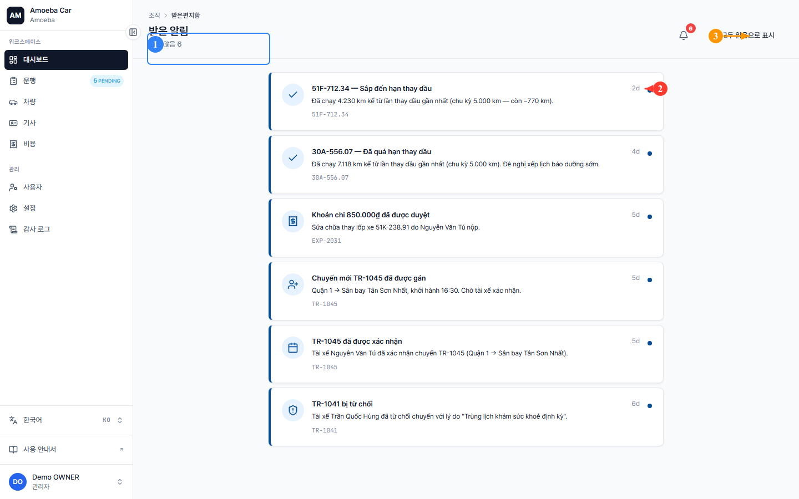
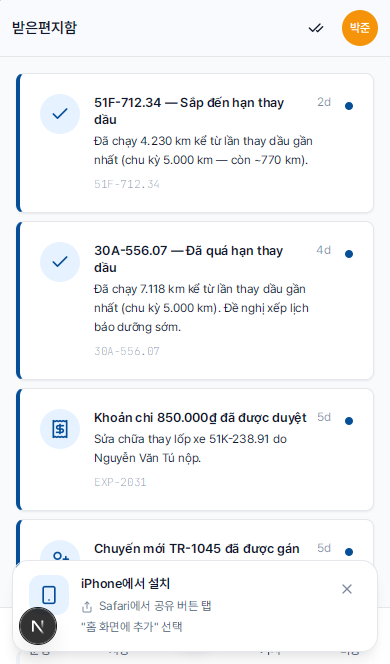

알림함
- 대상
- 모든 역할
- 읽는 시간
- 약 3분
- 관련 페이지
/inbox
시스템은 관련 이벤트 발생 시 자동으로 알림을 보냅니다: 새 운행 배정, 비용 승인, 정비 알림 등. 모든 알림은 알림함 한 곳에 모입니다.
1. 알림함 열기
1
상단 바의 벨 아이콘을 클릭합니다 — 작은 빨간 숫자가 읽지 않은 알림 수입니다.
2
또는 사이드바의 알림함 메뉴(관리자)를 클릭합니다.


2. 알림 종류
| 종류 | 발송 시점 | 수신자 |
|---|---|---|
| 운행 배정 | 관리자가 새 운행 배정 | 기사 |
| 운행 확인됨 | 기사가 본인 운행을 확인 | 운행 작성자 |
| 운행 거절됨 | 기사가 운행 거절 | 관리자 |
| 비용 승인됨 | 관리자가 제출한 비용을 승인 | 제출자 |
| 비용 거절됨 | 관리자가 비용 거절 (사유 포함) | 제출자 |
| 오일 교환 임박 | 차량이 교환 주기의 80% 도달 | 관리자, 매니저 |
| 오일 교환 만료 | 차량이 교환 주기 초과 | 관리자, 매니저 |
| 정기검사 임박 | 차량 정기검사 만료 임박 | 관리자, 매니저 |
3. 읽음 처리
알림 한 줄을 클릭하면 자동으로 읽음 처리되며 (파란 점이 사라짐) 해당 상세 페이지(예: 운행 또는 비용)로 이동합니다.
4. 알림 채널
앱 내 알림함 외에도 다른 채널로 알림이 발송됩니다:
- 이메일 — Amoeba에 등록된 주소로 (선택한 언어로 발송)
- 푸시 알림 (Web Push) — 허용한 경우 브라우저 또는 모바일에서 팝업
ℹ️
푸시 알림 활성화 — 앱에 처음 들어가면 상단에 푸시 알림 활성화 배너가 표시됩니다. 닫았다면 나 → 푸시 알림에서 다시 활성화할 수 있습니다.
⚠️
iOS Safari는 홈 화면에 PWA를 설치한 후에만 Web Push를 지원합니다. iPhone 기사는 PWA를 설치하세요 — PWA 설치 참조.